residuals(object, type=c("working", "response", "deviance", "pearson", "partial"))
rstandard(object)
rstudent(object)10 Diagnósticos parte I
En este capítulo se presentan varias herramientas útiles para hacer diagnósticos de un modelo ajustado.
Supuestos
Los supuestos en un modelo de regresión se pueden escribir de dos formas:
Forma I
- Los errores \(\epsilon_i\) tienen distribución normal.
- Los errores \(\epsilon_i\) tienen media cero.
- Los errores \(\epsilon_i\) tiene varianza constante.
- Los errores \(\epsilon_i\) no están correlacionados.
Forma II
- La respuesta \(y\) tiene distribución normal.
- La varianza de la respuesta \(y\) es constante.
- Las observaciones son independientes \(y\).
- Relación lineal entre la variable respuesta y las covariables.
Ambos conjuntos de supuestos son equivalentes, la forma I está dirigida hacia los errores mientras que en la forma II está dirigida hacia los \(y_i\).
Residuales
Los residuales en los modelos de regresión nos ayudan a:
- determinar qué tan bien el modelo explica el patrón de los datos,
- verificar el cumplimiento de los supuestos del modelo.
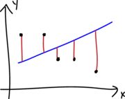
A continuación se muestran los diferentes tipos de residuales que se pueden definir para un modelo de regresión. Todas las fórmulas mostradas coinciden con las fórmulas usadas internamente por R para calcular los residuales.
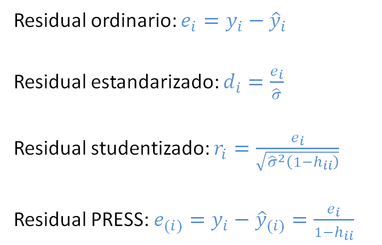
- La cantidad \(w_i\) usada en varios residuales corresponde al peso o importancia de cada observación en el modelo, por defecto es \(w_i=1\).
- La cantidad \(h_{ii}\) se llama leverage y corresponde al elemento \(i\) de la diagonal de la matriz sombrero o hat \(\boldsymbol{H} = \boldsymbol{X}(\boldsymbol{X}^\top \boldsymbol{X})^{-1}\boldsymbol{X}^\top\).
- La varianza \(\hat{\sigma}_{(i)}^{2}\) es la varianza estimada al NO tener en cuenta la observación \(i\)-ésima. La cantidad \(\hat{y}_{(i)}\) es la estimación de la \(i\)-ésima observación usando un modelo en el cual la observación \(i\)-ésima NO fue usada en el ajuste del modelo.
En algunos textos los residuales estandarizados y estudentizados se definen de una forma más sencilla sin involucrar los pesos \(w_i\) ni los valores \(h_{ii}\). Las fórmulas sencillas de esos residuales son:
- \(d_i=\frac{e_i}{\sqrt{\hat{\sigma^2}}}\).
- \(r_i=\frac{e_i}{\sqrt{\hat{\sigma^2} (1-h_{ii})}}\)
Para obtener los residuales arriba definidos tenemos las siguientes funciones:
Si un modelo lineal está correctamente especificado (ajustado), los residuos de Pearson serán independientes de los valores ajustados e independientes de los predictores, y estos gráficos deben ser “gráficos nulos”, es decir, gráficos sin características sistemáticas, en el sentido de que la distribución condicional de los residuos (en el eje vertical del gráfico) no debe cambiar con los valores ajustados o con un predictor (en el eje horizontal) (Fox and Weisberg 2019).
Los errores del modelo se denotan como \(\epsilon_i\) mientras que los residuales usuales se denotan como \(e_i\), no los confunda.
Ejemplo
Considere los datos mostrados abajo, ajuste un modelo de regresión lineal para explicar la media de \(y\) en función de \(x\) y usando como pesos los valores de \(w\). Obtenga los residuales usando las definiciones (fórmulas) y luego usando las funciones de R, compruebe que los resultados coinciden.
x <- c(4, 6, 8, 7, 8, 5)
y <- c(1, 2, 3, 4, 5, 4)
w <- c(0.1, 0.1, 0.2, 0.1, 0.2, 0.9)Solución
Primero se van a calcular los residuales manualmente aplicando las definiciones.
mod <- lm(y ~ x, weights=w)
ei <- y - fitted(mod)
pi <- ei * sqrt(mod$weights)
hii <- lm.influence(mod)$hat
di <- ei * sqrt(mod$weights) / sqrt(summary(mod)$sigma^2 * (1-hii))
ri <- ei * sqrt(mod$weights) / sqrt(lm.influence(mod)$sigma^2 * (1-hii))
cbind(ei=ei, pi=pi, di=di, ri=ri) ei pi di ri
1 -2.3487395 -0.74273664 -1.36444485 -1.61615603
2 -1.7100840 -0.54077605 -0.92897379 -0.90846102
3 -1.0714286 -0.47915742 -1.05401601 -1.07406432
4 0.1092437 0.03454589 0.06072186 0.05261092
5 0.9285714 0.41526977 0.91348054 0.88927302
6 0.4705882 0.44643920 1.63607317 2.46342873Ahora se van a calcular los residuales usando las funciones de R.
cbind(ei=residuals(mod, type='working'),
pi=residuals(mod, type='pearson'),
di=rstandard(mod),
ri=rstudent(mod)) ei pi di ri
1 -2.3487395 -0.74273664 -1.36444485 -1.61615603
2 -1.7100840 -0.54077605 -0.92897379 -0.90846102
3 -1.0714286 -0.47915742 -1.05401601 -1.07406432
4 0.1092437 0.03454589 0.06072186 0.05261092
5 0.9285714 0.41526977 0.91348054 0.88927302
6 0.4705882 0.44643920 1.63607317 2.46342873Estimado lector, ¿qué puede usted concluir de los resultados de este ejemplo?
Chequeando normalidad de los errores
Para estudiar si lo errores tienen una distribución aproximadamente normal se construyen los residuales estandarizados \(d_i\). Una vez calculados los \(d_i\) se construye un gráfico de normalidad o qqplot usando la función qqnorm, el resultado es un gráfico similar al mostrado a continuación.
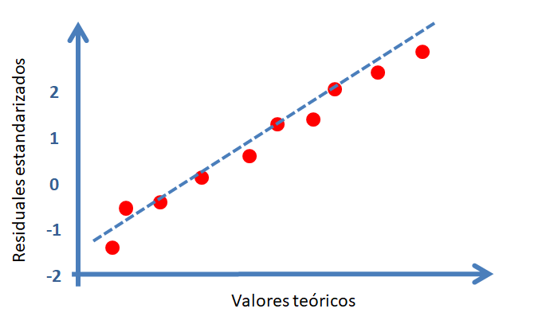
En la siguiente figura se muestran los diferentes patrones que se pueden encontrar en el gráfico de normalidad para \(d_i\). Para que se cumpla el supuesto de normalidad de los errores \(e_i\) se necesita que los \(d_i\) estén lo más alineados con la recta de referencia, alejamientos severos de esta recta significa que se viola el supuesto de normalidad de los errores.
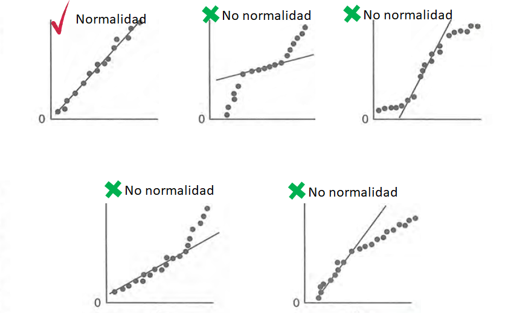
Chequeando si errores con media cero
Para determinar si los errores tienen una media cerca al valor de cero se puede usar la función mean sobre los residuales \(e_i\).
Chequeando si los errores tiene varianza constante
En la siguiente figura se muestra el caso de varianza \(\sigma^2\) constante (homocedasticidad) y el caso de varianza \(\sigma^2\) no constante (heterocedasticidad). La homocedasticidad es el supuesto exigido en modelos de regresión.
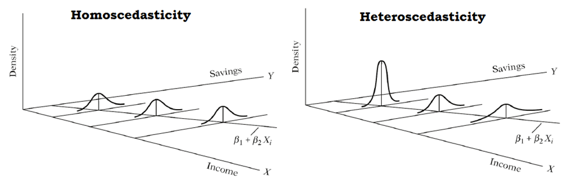
Para chequear si los errores tiene varianza constante se construye un gráfico de \(e_i\) versus \(\hat{\mu}_i\), un gráfico similar al mostrado a continuación.
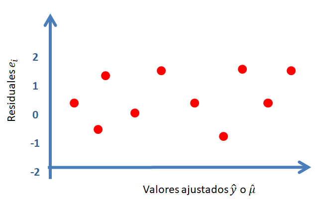
En la siguiente figura se muestran los diferentes patrones que se pueden encontrar en el gráfico de \(e_i\) versus \(\hat{\mu}_i\). Para que se cumpla el supuesto de homocedasticidad de los errores se necesita que los puntos se ubiquen como una nube de puntos sin ningún patrón claro. Cualquier patrón que se observe es evidencia de que no se cumple el supuesto de homocedasticidad de los errores.
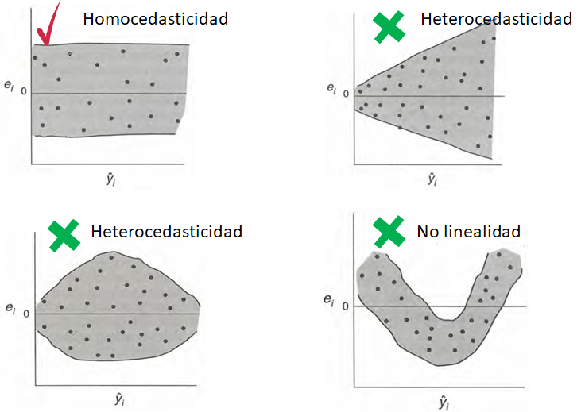
Una analogía útil para recordar si se cumple la homocedasticidad es que el gráfico de \(e_i\) versus \(\hat{\mu}_i\) tenga una apariencia como la mostrada en la siguiente figura.
Otro gráfico útil para chequear el supuesto de homocedasticidad es dibujar un diagrama de dispersión de \(\sqrt{|d_i|}\) versus \(\hat{\mu}_i\), un gráfico similar al mostrado a continuación.
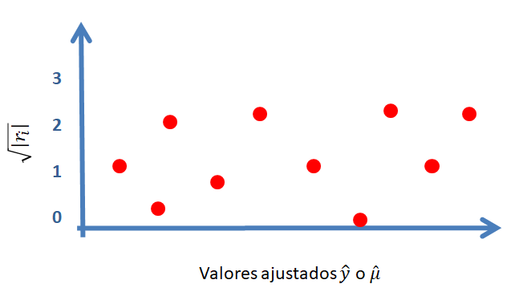
Al igual que en el gráfico de \(e_i\) versus \(\hat{\mu}_i\), se espera que no existan patrones claros en la nube de puntos.
Chequeando si errores no están correlacionados
Para estudiar esta situación se debe tener la historia de los errores, es decir, el orden en que las observaciones fueron tomadas. Usando es información se puede dibujar un diagrama de dispersión del residual versus tiempo, un gráfico similar al mostrado a continuación.
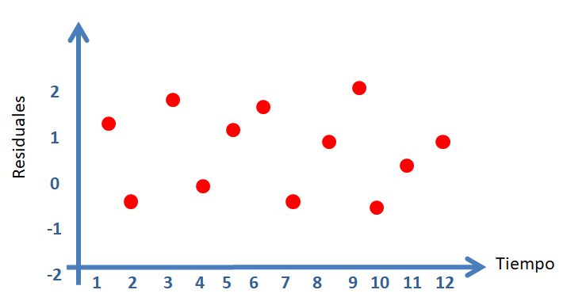
En la siguiente figura se muestran los diferentes patrones que se pueden encontrar en el gráfico de \(e_i\) versus el tiempo. Para que se cumpla el supuesto de independencia se espera que los puntos se ubiquen como una nube de puntos sin ningún patrón claro.
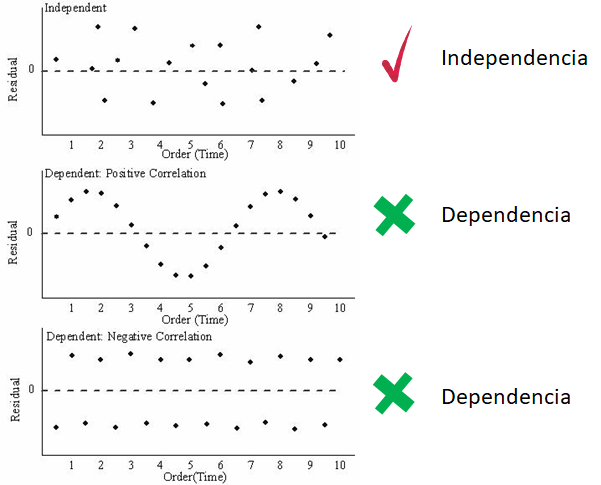
Ejemplo cumpliendo los supuestos
En este ejemplo vamos a simular 500 observaciones del modelo mostrado abajo, luego vamos a ajustar un modelo correcto a los datos y por último vamos a realizar el análisis de residuales para saber si el modelo fue bien ajustado.
\[\begin{align*} y_i &\sim N(\mu_i, \sigma^2) \\ \mu_i &= 4 - 6 x_i \\ x_i &\sim U(-5, 6) \\ \sigma^2 &= 16 \end{align*}\]
Solución
Lo primero que se debe hacer es simular los datos y ajustar el modelo.
gen_dat <- function(n) {
varianza <- 16
x <- runif(n=n, min=-5, max=6)
media <- 4 - 6 * x
y <- rnorm(n=n, mean=media, sd=sqrt(varianza))
marco_datos <- data.frame(y=y, x=x)
return(marco_datos)
}
datos <- gen_dat(n=500)
mod <- lm(y ~ x, data=datos)Los gráficos de residuales explicados anteriormente se pueden obtener usando la función plot sobre el modelo ajustado mod.
par(mfrow=c(2, 2))
plot(mod, las=1, col='darkseagreen3', which=1:3)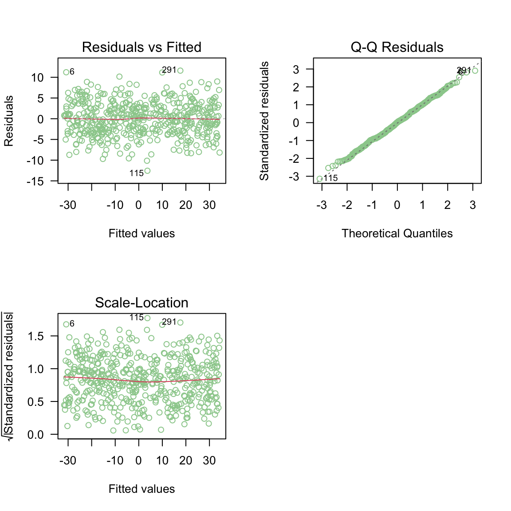
En la figura anterior se observa que los puntos del gráfico de normalidad de los residuales estandarizados \(d_i\) están muy cerca de la línea de referencia. Los diagramas de dispersión entre los residuales versus \(\hat{\mu}_i\) no muestran ninguna anomalía. Por estas razones podemos asumir que los supuestos del modelo se cumplen.
Para estar más seguros de la normalidad de los errores vamos a aplicar la prueba Shapiro-Wilks. En esta prueba se tienen las siguiente hipótesis.
\[\begin{align} H_0 &: \text{los residuales tienen distribución normal.} \\ H_1 &= \text{los residuales NO tienen distribución normal.} \end{align}\]
Para aplicar la prueba podemos usar el siguiente código:
ei <- residuals(mod)
shapiro.test(ei)
Shapiro-Wilk normality test
data: ei
W = 0.99827, p-value = 0.9024De la salida anterior vemos que el valor-p es mayor que un nivel de significancia del 7 por ciento, eso significa que no hay evidencias para rechazar \(H_0\).
En este ejemplo se usó
plot(mod, which=1:3) para obtener los tres primeros gráficos que entrega la función plot, el cuarto gráfico no es un gráfico de residuales y por eso se evitó en el ejemplo.
Ejemplo violando los supuestos
En este ejemplo vamos a simular 500 observaciones del modelo mostrado abajo en el cual modelo la media es función de \(x\) y de \(x^2\). Luego vamos a ajustar un modelo incorrecto en el cual la media solo dependa de \(x\) y por último vamos a construir los gráficos de residuales para ver si se logra identificar el problema.
\[\begin{align*} y_i &\sim N(\mu_i, \sigma^2) \\ \mu_i &= 4 - 6 x_i + 2 x_i^2 \\ x_i &\sim U(-5, 6) \\ \sigma^2 &= 16 \end{align*}\]
Solución
Lo primero que se debe hacer es simular los datos y ajustar el modelo.
gen_dat <- function(n) {
varianza <- 16
x <- runif(n=n, min=-5, max=6)
media <- 4 - 6 * x + 2 * x^2
y <- rnorm(n=n, mean=media, sd=sqrt(varianza))
marco_datos <- data.frame(y=y, x=x)
return(marco_datos)
}
datos <- gen_dat(n=500)
mod <- lm(y ~ x, data=datos)Los gráficos de residuales explicados anteriormente se pueden obtener usando la función plot sobre el modelo ajustado mod.
par(mfrow=c(2, 2))
plot(mod, las=1, col='tomato', which=1:3)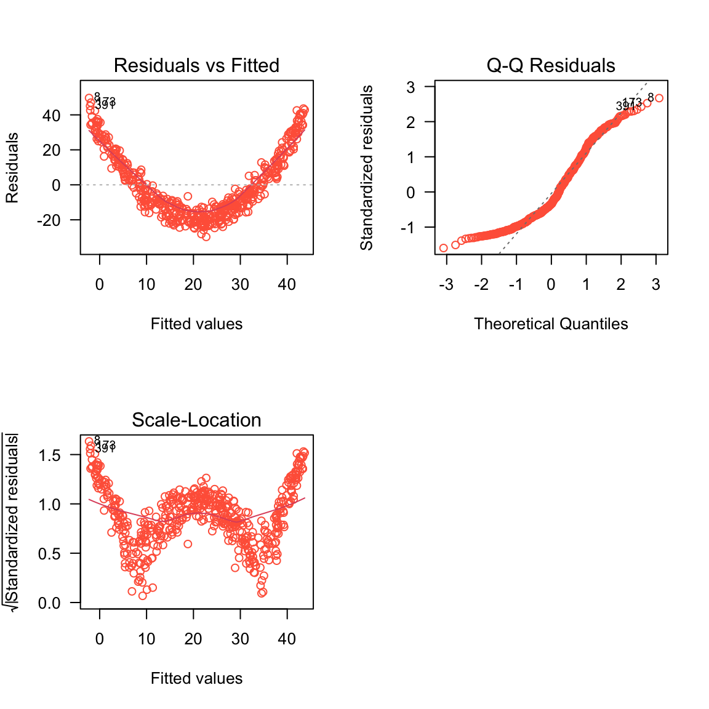
De los gráficos anteriores se observa claramente que lo residuales no dicen que algo está mal con el modelo ajustado.
Para estar más seguros de la normalidad de los errores vamos a aplicar la prueba Shapiro-Wilks. En esta prueba se tienen las siguiente hipótesis.
\[\begin{align} H_0 &: \text{los residuales tienen distribución normal.} \\ H_1 &= \text{los residuales NO tienen distribución normal.} \end{align}\]
Para aplicar la prueba podemos usar el siguiente código:
ei <- residuals(mod)
shapiro.test(ei)
Shapiro-Wilk normality test
data: ei
W = 0.92112, p-value = 1.625e-15De la salida anterior vemos que el valor-p es menor que un nivel de significancia del 7 por ciento, eso significa que no hay evidencias para rechazar \(H_0\).
Ejemplo violando los supuestos
En este ejemplo vamos a simular 500 observaciones del modelo mostrado abajo en el cual la varianza de \(Y\) es función de \(x\). Luego vamos a ajustar un modelo incorrecto en el cual asumimos que la varianza es constante y por último vamos a construir los gráficos de residuales para ver si se logra identificar el problema.
\[\begin{align*} y_i &\sim N(\mu_i, \sigma^2) \\ \mu_i &= 4 - 6 x_i \\ x_i &\sim U(-5, 6) \\ \log(\sigma^2) &= -1 + 0.5 x_i \end{align*}\]
Solución
Lo primero que se debe hacer es simular los datos y ajustar el modelo.
gen_dat <- function(n) {
x <- runif(n=n, min=-5, max=6)
media <- 4 - 6 * x
varianza <- exp(-1 + 0.5 * x)
y <- rnorm(n=n, mean=media, sd=sqrt(varianza))
marco_datos <- data.frame(y=y, x=x)
return(marco_datos)
}
datos <- gen_dat(n=500)
mod <- lm(y ~ x, data=datos)Los gráficos de residuales explicados anteriormente se pueden obtener usando la función plot sobre el modelo ajustado mod.
par(mfrow=c(2, 2))
plot(mod, las=1, col='purple', which=1:3)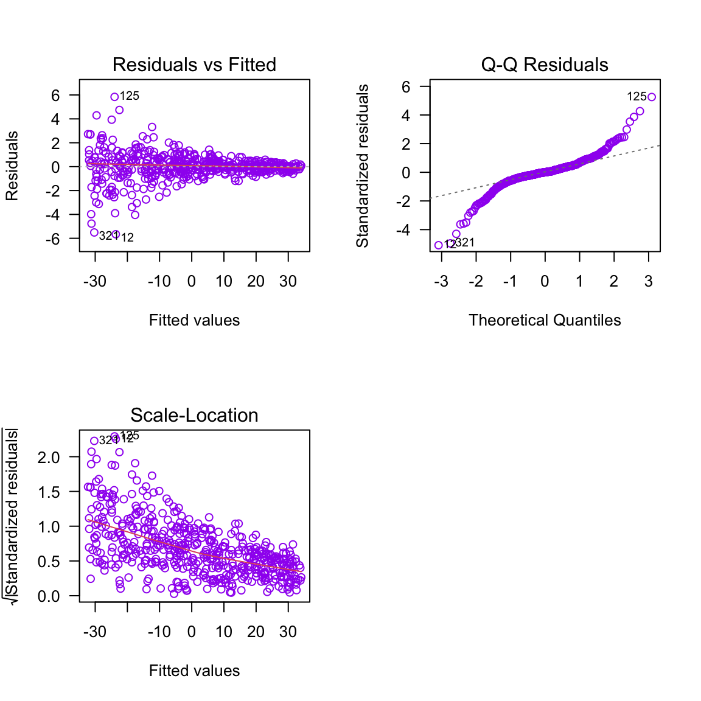
De los gráficos anteriores se observa claramente que lo residuales no dicen que algo está mal con el modelo ajustado.
Para estar más seguros de la normalidad de los errores vamos a aplicar la prueba Shapiro-Wilks. En esta prueba se tienen las siguiente hipótesis.
\[\begin{align} H_0 &: \text{los residuales tienen distribución normal.} \\ H_1 &= \text{los residuales NO tienen distribución normal.} \end{align}\]
Para aplicar la prueba podemos usar el siguiente código:
ei <- residuals(mod)
shapiro.test(ei)
Shapiro-Wilk normality test
data: ei
W = 0.88249, p-value < 2.2e-16De la salida anterior vemos que el valor-p es menor que un nivel de significancia del 7 por ciento, eso significa que no hay evidencias para rechazar \(H_0\).
Gráficos de residuales usando car
El paquete car de Fox et al. (2026), tiene unas funciones especiales para crear otro tipo de gráficos de residuales y que son útiles para identificar posibles anomalías en el modelo ajustado. A continuación las funciones para crear nuevos gráficos de residuales.
residualPlots(model): dibuja una gráfica de los residuos de Pearson versus cada término del predictor lineal y los valores ajustados \(\hat{\mu}_i\). También entrega los resultados de una prueba de hipótesis para saber si se debe agregar un término cuadrático de cada variable.mmpsomarginalModelPlots(model): dibuja una gráfica de la respuesta \(y_i\) versus cada covariable cuantitativa y los valores ajustados \(\hat{\mu}_i\), es una variación la propuesta de Cook and Weisberg (1997).
Ejemplo
Este ejemplo corresponde al ejemplo mostrado en el capítulo 6 de Fox and Weisberg (2019).
En este ejemplo se desea ajustar un modelo de regresión para explicar la media de la variable prestige en función de las variables education, income y type, usando la base de datos Prestige del paquete car (Fox et al. 2026).
library(car)
prestige_mod1 <- lm(prestige ~ education + income + type, data=Prestige)Para construir los gráficos de los residuos de Pearson versus cada término del predictor lineal y los valores ajustados \(\hat{\mu}_i\) se usa la siguiente instrucción (las=1 para poner los números vertical en el eje Y).
residualPlots(prestige_mod1, las=1)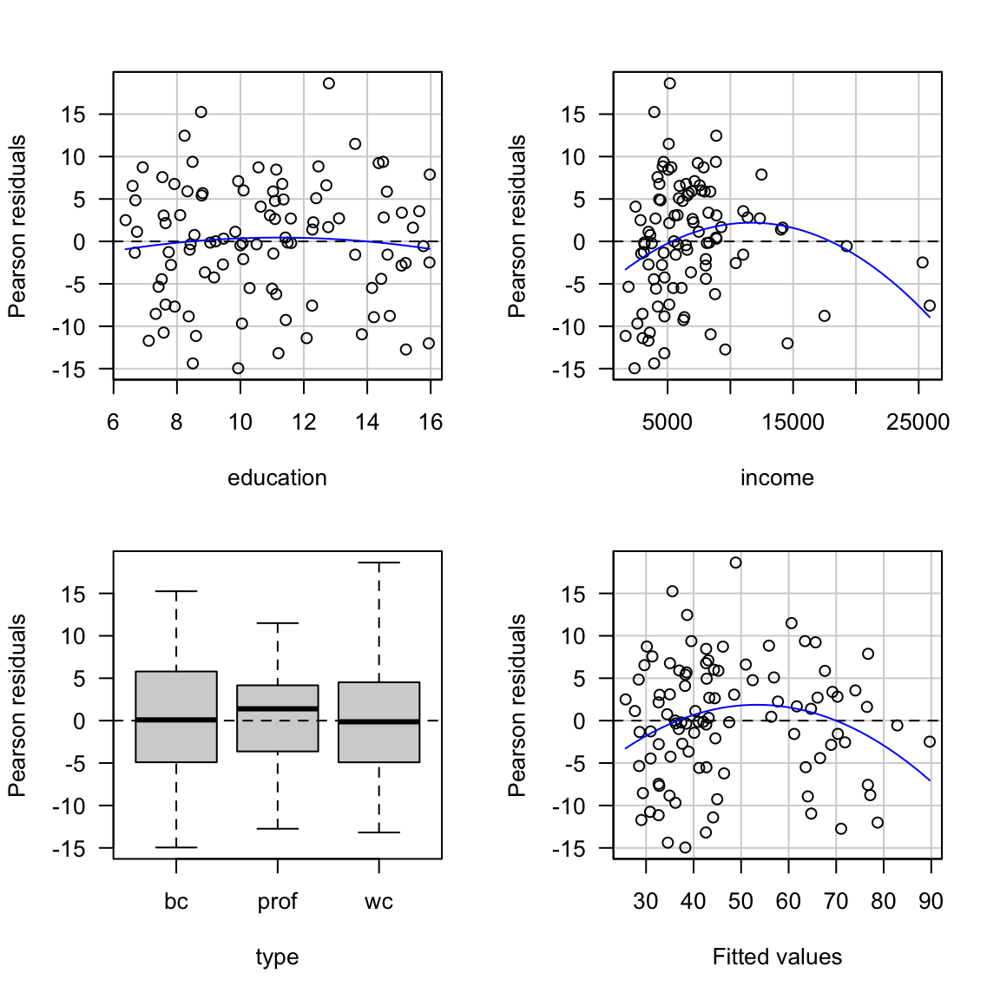
Test stat Pr(>|Test stat|)
education -0.6836 0.495942
income -2.8865 0.004854 **
type
Tukey test -2.6104 0.009043 **
---
Signif. codes: 0 '***' 0.001 '**' 0.01 '*' 0.05 '.' 0.1 ' ' 1De la figura anterior se observa lo siguiente:
- El gráfico de residuales vs education se asemeja a un “gráfico nulo”, en la que ningún patrón particular es aparente.
- El gráfico de residuales vs income presenta una curvatura.
- El gráfico de residuales vs type (var. cuali.) presenta una apariencia de un “gráfico nulo”, todas las cajas con a proximadamente el mismo centro y extensión.
- De los tres comentarios anteriores parece que falta el término \(Income^2\) en el predictor lineal.
La sospecha de que falta el término \(Income^2\) se ve reforzada por la tabla que acompaña la salida de residualPlots(prestige_mod). En la línea para la variable income se tiene la prueba de hipótesis:
- \(H_0:\) no se necesita \(Income^2\),
- \(H_A:\) si se necesita \(Income^2\).
El valor-P de esta prueba es 0.004854 y por lo tanto se justifica incluir \(Income^2\).
Para dibujar los gráficos marginales de \(y_i\) versus cada covariable cuantitativa y los valores ajustados \(\hat{\mu}_i\) se usa la siguiente instrucción.
marginalModelPlots(prestige_mod1, las=1)Warning in mmps(...): Interactions and/or factors skipped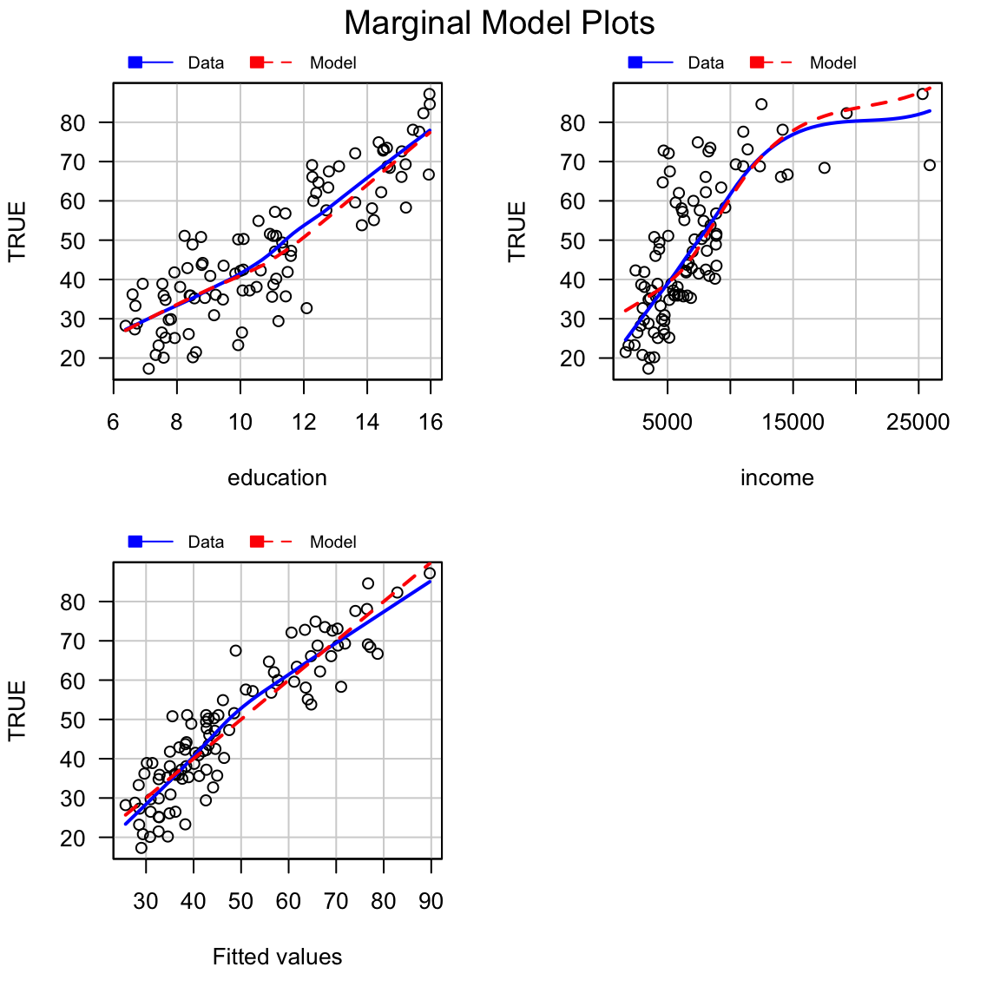
La línea de color azul es una regresión lowess entre \(y_i\) y la variable que está en el eje horizontal. La línea de color rojo es una regresión lowess entre \(\hat{\mu}_i\) y la variable que está en el eje horizontal. Según Fox and Weisberg (2019), si el modelo se ajusta bien a los datos, las líneas (azul y roja) estarán próximas, por el contrario, si las líneas difieren demasiado, es evidencia de que el modelo no explica bien los datos.
De la figura anterior se observa que las líneas (azul y roja) difieren un poco en el panel de \(y_i\) versus income, eso refuerza lo observado antes de que sería bueno agregar un término I(income^2).
prestige_mod2 <- lm (prestige ~ education + income +
I(income^2) + type, data=Prestige)residualPlots(prestige_mod2, las=1)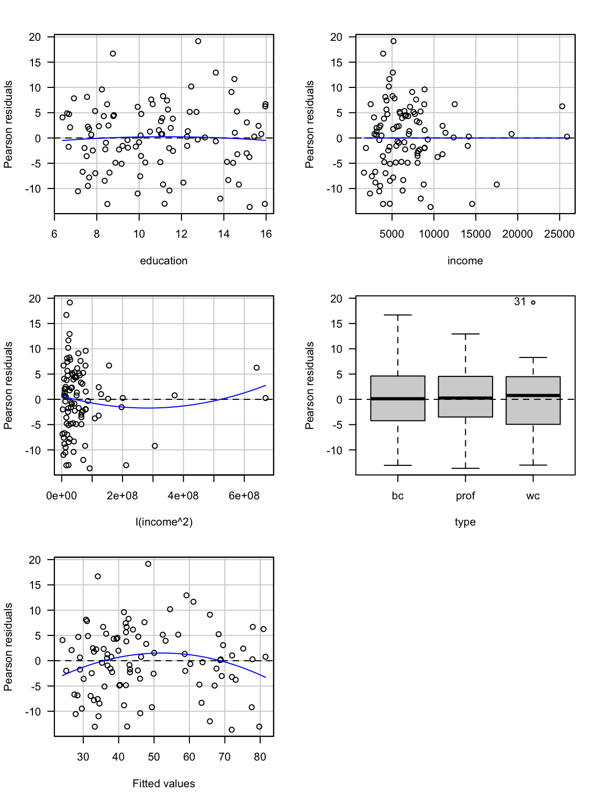
Test stat Pr(>|Test stat|)
education -0.3844 0.70156
income 0.2962 0.76774
I(income^2) 2.1493 0.03426 *
type
Tukey test -2.1877 0.02869 *
---
Signif. codes: 0 '***' 0.001 '**' 0.01 '*' 0.05 '.' 0.1 ' ' 1anova(prestige_mod1, prestige_mod2)Analysis of Variance Table
Model 1: prestige ~ education + income + type
Model 2: prestige ~ education + income + I(income^2) + type
Res.Df RSS Df Sum of Sq F Pr(>F)
1 93 4681.3
2 92 4292.5 1 388.74 8.3317 0.004854 **
---
Signif. codes: 0 '***' 0.001 '**' 0.01 '*' 0.05 '.' 0.1 ' ' 1Prueba de falta de ajuste
Para el caso de la RLS, se quiere probar:
\[\begin{aligned} \begin{cases} H_0:\ E(Y_i) = E(Y\vert X_i) = \beta_0 + \beta_1 X_i\\ \\ H_1:\ E(Y_i) = E(Y\vert X_i) \neq \beta_0 + \beta_1 X_i \end{cases} \end{aligned}\]
Para aplicar esta prueba construye la tabla anova de la siguiente manera:
Bajo la hipótesis nula \({H_0:\ E(Y_i) = \beta_0 + \beta_1x_i}\), el estadístico se distribuye como una \(F\) con \((m - 2)\) y \((n - m)\) grados de libertad. Así, a un nivel de significancia \({\alpha}\) se rechaza la hipótesis nula de que el modelo lineal es adecuado (en favor de la hipótesis de que el modelo lineal tiene falta de ajuste) si \({F_0 > F_{\alpha, m - 2, n - m}}\).
Ejemplo 1
Suponga que se tienen los siguientes datos.
# Example for section 4.5 Montgomery, Peck & Vining (2006)
x <- c(1.0, 1.0, 2.0, 3.3, 3.3, 4.0, 4.0, 4.0, 4.7, 5.0,
5.6, 5.6, 5.6, 6.0, 6.0, 6.5, 6.9)
y <- c(10.84, 9.30, 16.35, 22.88, 24.35, 24.56, 25.86,
29.16, 24.59, 22.25, 25.90, 27.20, 25.61, 25.45,
26.56, 21.03, 21.46)¿Es el modelo de regresión lineal simple apropiado para explicar \(Y\) en función de \(X\)?
Solución
Primero exploremos la relación entre las variables.
plot(x=x, y=y, pch=20, cex=2, col="red")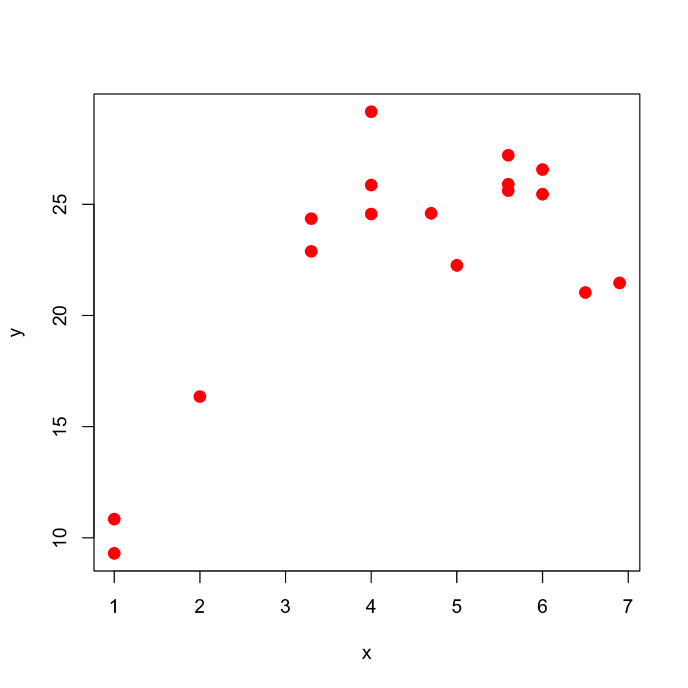
Luego vamos a ajustar el modelo.
mod <- lm(y ~ x)Luego construimos la tabla anova por medio de la función lack_fit_test del paquete model. Para instalar el paquete model propuesto por Hernandez and Usuga (2026) podemos usar el siguiente código.
if (!require("remotes")) install.packages("remotes")
remotes::install_github("fhernanb/model")Luego de esto ya podemos usar la función lack_fit_test.
library(model)
lack_fit_test(mod)Lack of fit test - Anova Table
Sum Sq Df Mean Sq F value Pr(>F)
Regression 237.48 1 237.479 14.241 0.001839 **
Residuals 250.13 15 16.676
Lack of fit 234.57 8 29.321 13.188 0.001389 **
Pure error 15.56 7 2.223
Total 487.61 16
---
Signif. codes: 0 '***' 0.001 '**' 0.01 '*' 0.05 '.' 0.1 ' ' 1De la salida anterior tenemos un valor-P de 0.001389 con lo cual podemos decir que hay evidencias para rechazar \(H_0\).
plot(x=x, y=y, pch=20, cex=2, col="red")
abline(mod, lty="dashed", col="blue", lwd=2)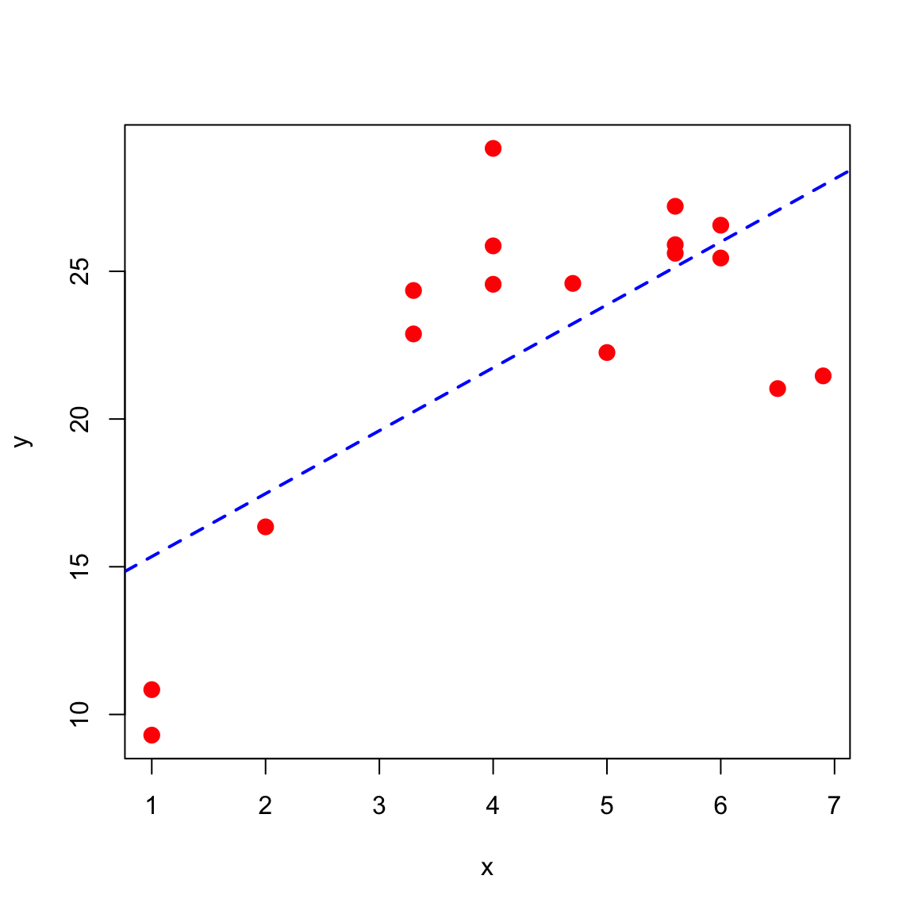
Ejemplo 2
Suponga que se tienen los siguientes datos.
# Example 9.6 Montgomery & Runger (1996)
x <- c(1.0, 1.0, 2.0, 3.3, 3.3, 4.0, 4.0, 4.0, 5.0,
5.6, 5.6, 5.6, 6.0, 6.0, 6.5, 6.9)
y <- c(2.3, 1.8, 2.8, 1.8, 3.7, 2.6, 2.6, 2.2, 2.0, 3.5,
2.8, 2.1, 3.4, 3.2, 3.4, 5.0)¿Es el modelo de regresión lineal simple apropiado para explicar \(Y\) en función de \(X\)?
Solución
Primero exploremos la relación entre las variables.
plot(x=x, y=y, pch=20, cex=2, col="chartreuse3")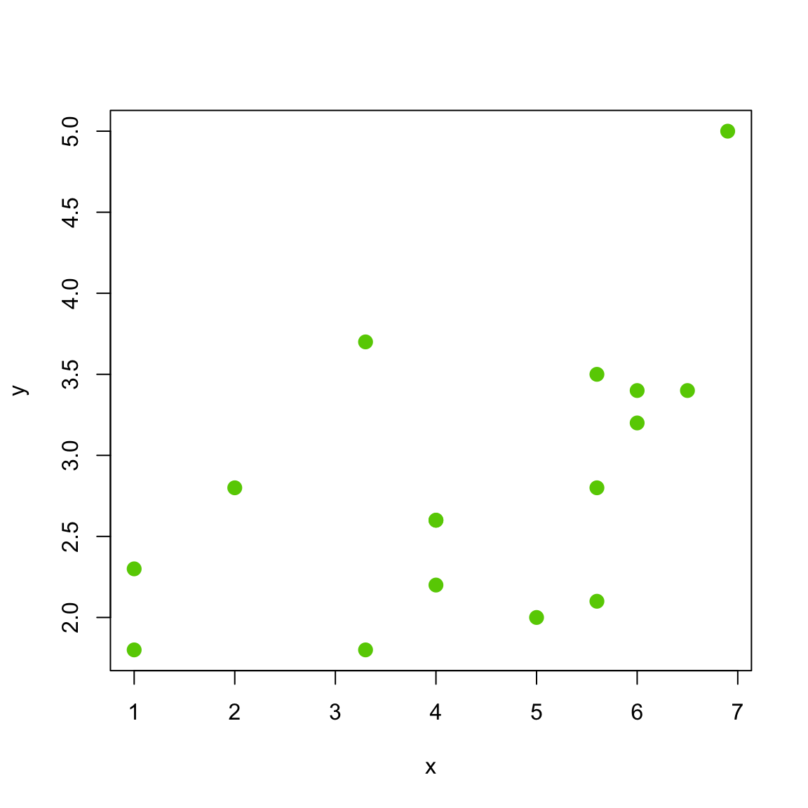
Luego vamos a ajustar el modelo.
mod <- lm(y ~ x)Luego construimos la tabla anova por medio de la función lack_fit_test del paquete model. Para instalar el paquete model podemos usar el siguiente código.
if (!require("remotes")) install.packages("remotes")
remotes::install_github("fhernanb/model")Luego de esto ya podemos usar la función lack_fit_test.
library(model)
lack_fit_test(mod)Lack of fit test - Anova Table
Sum Sq Df Mean Sq F value Pr(>F)
Regression 3.4928 1 3.4928 6.6645 0.02174 *
Residuals 7.3372 14 0.5241
Lack of fit 4.3005 7 0.6144 1.4162 0.32882
Pure error 3.0367 7 0.4338
Total 10.8300 15
---
Signif. codes: 0 '***' 0.001 '**' 0.01 '*' 0.05 '.' 0.1 ' ' 1De la salida anterior tenemos un valor-P de 0.32882 con lo cual podemos decir que NO hay evidencias para rechazar \(H_0\).
plot(x=x, y=y, pch=20, cex=2, col="chartreuse3")
abline(mod, lty="dashed", col="mediumpurple2", lwd=2)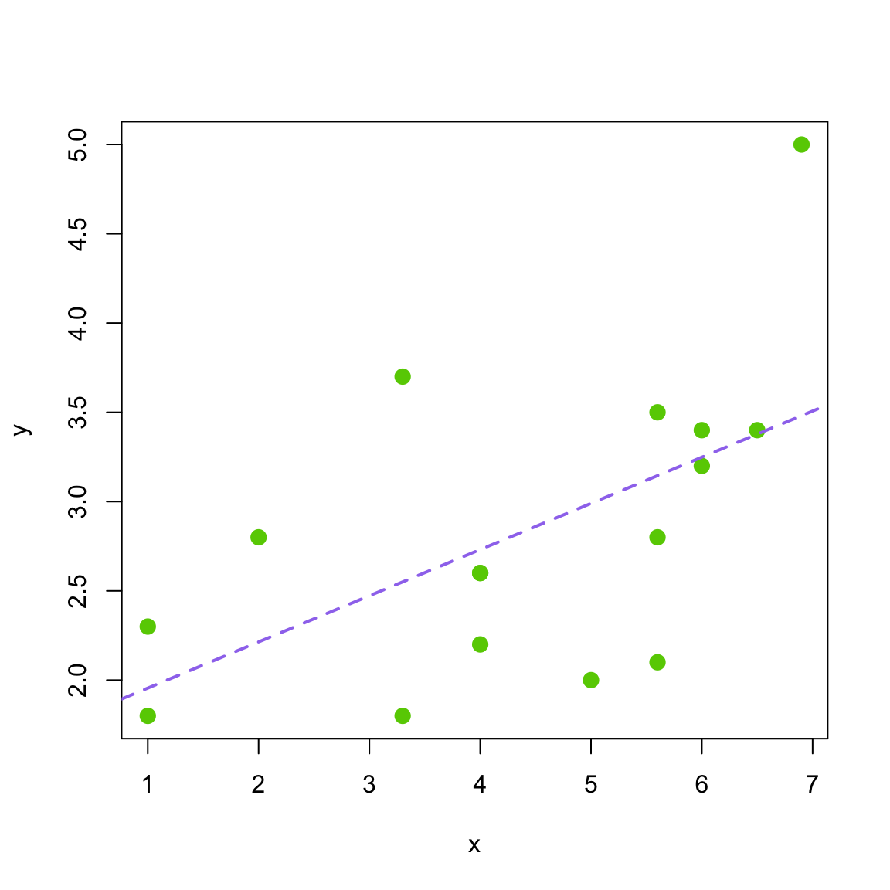
Cook, R. Dennis, and Sanford Weisberg. 1997. “Graphics for Assessing the Adequacy of Regression Models.” Journal of the American Statistical Association 92 (438): 490–99. https://doi.org/10.1080/01621459.1997.10474002.
Fox, John, Sanford Weisberg, and Brad Price. 2026. Car: Companion to Applied Regression. https://github.com/bprice2652/car_repo.
Fox, J., and W. Weisberg. 2019. An r Companion to Applied Regression. Third. SAGE Publications, Inc.
Hernandez, Freddy, and Olga Usuga. 2026. Model: This Package Contains Useful Functions for Modeling Regresion. https://fhernanb.github.io/model.